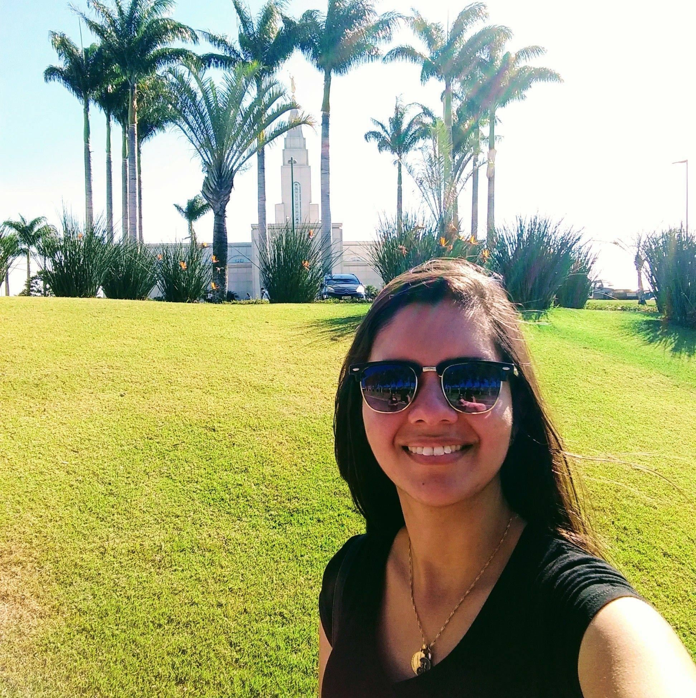

Bruna Ferreira Guimarães

Essa foto eu tirei no meu lugar preferido de estar
Índice
Sou de Itapeva, uma cidade do interior de São Paulo. Quando me casei, em Fevereiro de 2020, me mudei para Belo Horizonte em Minas Gerais. Mas agora, me mudei junto com meu marido para a cidade de Valinhos/SP.
Tem algumas coisas que eu gosto de fazer, são elas:
- Respeitar e ser humilde para aprender
- Empatia com os outros
- Uma boa escrita
- Disposição para mudar
- habilidade para ensinar
- Calma ao lidar com situações delicadas
- Foco em soluções
- Cooperação e gentileza
- Tenho também a habilidade com a música. Gosto de tocas vários instrumentos. Mas no momento estou tocando apenas piano.
Esse é meu Blog de viagem!